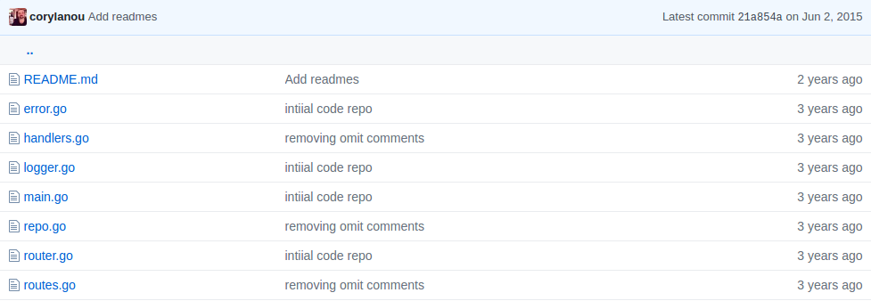
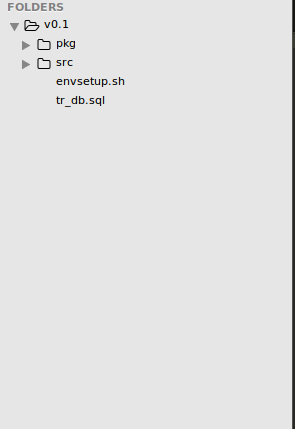
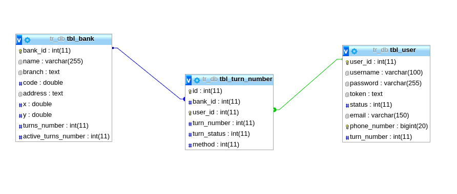
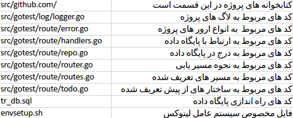

بررسی کد سرور¶
ساختار پروژه¶
پروژه از پروژه متن باز دیگری که در این لینک درباره آن صحبت شده است ساخته شده است
و همچنین از v۹ این پروژه fork شده است که در تصویر ساختار آن را مشاهده میکنید
پس از تغیرات و به خوانایی بهتر ساختار پروژه به این شکل تغیر کرد
همچنین ساختار دیتابیس نیز بدین شهر است
که به صورت تفصیلی در بررسی الگوریتم درباره آن صحبت شده است
بررسی فایل های پروژه¶
برای لاگ های پروژه بر روی cli
logger.go¶
چون در فولدر log هستیم پس داریم
package log
کتابخوانه های فراخوانی شده هم شامل این مقادیر است
import (
"log"
"net/http"
"time"
)
تابعی که هر درخوات به وبسرویس را با مشخصات زیر لاگ میکند
func Logger(inner http.Handler, name string) http.Handler {
return http.HandlerFunc(func(w http.ResponseWriter, r *http.Request) {
start := time.Now()
inner.ServeHTTP(w, r)
// چاپ لاگ
log.Printf(
// با این فرمت نمایش میدهد
"%s\t%s\t%s\t%s\t%s",
// متد درخواست مثلا GET
r.Method,
// آدرس درخواست شده
r.RequestURI,
// نام تابع صدا زده شده
name,
// زمان درخواست اطلاعات
time.Since(start),
)
})
}
error.go¶
فایلی جدا برای گرفتن نمونه با ساختار مشخص برای خطا یابی
چون در فولدر router هستیم پس داریم
package route
// ساخت ساختار مشخصی با نام jsonErr
type jsonErr struct {
Code int `json:"code"`
// کد خطا از نوع json:code
Text string `json:"text"`
// متن خطا از نوع json:text
}
handlers.go¶
چون در فولدر router هستیم پس داریم
package route
کتابخوانه های فراخوانی شده هم شامل این مقادیر است
import (
"database/sql"
"encoding/json"
"fmt"
_ "github.com/go-sql-driver/mysql"
"github.com/gorilla/mux"
"io"
"io/ioutil"
"net/http"
"strconv"
)
با توجه به مسیر نوشته شده مسیر پیش فرض به این تابع هدایت میشود
func Index(w http.ResponseWriter, r *http.Request) {
fmt.Fprint(w, "Welcome To Gotest!\n")
}
برای نشان دادن همه ی افراد داخل پایگاه داده از این تابع استفاده میشود
همچنین با این دستور میتوانید آن را تست کنید
// User Scope
func UserShow(w http.ResponseWriter, r *http.Request) {
fmt.Println("UserShow()")
// فهمیدن برنامه اینکه داخل تابع شده است
w.Header().Set("Content-Type", "application/json; charset=UTF-8")
// برای مشخص کردن نوع خروجی وبسرویس که از نوع json است
w.WriteHeader(http.StatusOK)
// و همجنین برای تایین موفق آمیز بودن عملیات
getUser, err := getJSON("SELECT * from tbl_user")
// query برای نشان دادن تمامی افراد جدول user
if err != nil {
fmt.Fprint(w, err)
// چک کردن خروجی و در صورت اررو چاپ خطا
panic(err)
// نمایش خطا برای خطا یابی
}
fmt.Fprint(w, getUser)
// در نهایت خروجی مورد نظر چاپ شود
}
نمایش فردی خاص بر اساس شماره تلفن ارسالی به وبسرویس
func UserShowById(w http.ResponseWriter, r *http.Request) {
fmt.Println("UserShowById()")
// فهمیدن برنامه اینکه داخل تابع شده است
vars := mux.Vars(r)
// برای گرفتن مقادیر ارسالی از متغیر r که توسط کتابخوانه mux به یک آرایه با اندیس های ارسالی تبدیل میشود
w.Header().Set("Content-Type", "application/json; charset=UTF-8")
// برای مشخص کردن نوع خروجی وبسرویس که از نوع json است
w.WriteHeader(http.StatusOK)
// و همجنین برای تایین موفق آمیز بودن عملیات
getUserbyid, err_user_id := getJSON("SELECT * from tbl_user where phone_number="+ vars["userNumber"])
// query برای نشان دادن افراد با شرط اینکه شماره تلفن فرد با مقدار ارسالی به وبسرویس یکسان باشد
if err_user_id != nil {
fmt.Fprint(w, err_user_id)
// چک کردن خروجی و در صورت اررو چاپ خطا
}
fmt.Fprint(w, getUserbyid)
// در نهایت خروجی مورد نظر چاپ شود
}
ثبت کاربری در پایگاه داده
همچنین با این دستور میتوانید آن را تست کنید
func UserCreate(w http.ResponseWriter, r *http.Request) {
fmt.Println("UserCreate()")
// فهمیدن برنامه اینکه داخل تابع شده است
var todo Todo
// برای ثبت کاربر در پایگاه داده از ساختار از پیش نوشته شده که شامل فیلد های پایگاه داده است استفاده میکنیم
body, err := ioutil.ReadAll(io.LimitReader(r.Body, 1048576))
// ساخت ساختار مورد نظر برای ثبت
if err != nil {
panic(err)
// نمایش خطا برای خطا یابی
}
// چک کردن اینکه آیا فایل بسته شده است یا خیر
if err := r.Body.Close(); err != nil {
panic(err)
// نمایش خطا برای خطا یابی
}
// چک کردن خروجی در صورت ناهمخوانی فیلد و مقادیر
if err := json.Unmarshal(body, &todo); err != nil {
w.Header().Set("Content-Type", "application/json; charset=UTF-8")
// برای مشخص کردن نوع خروجی وبسرویس که از نوع json است
w.WriteHeader(422) // unprocessable entity
// پیوست کردن کد 422 برای اینکه مقادری هماهنگی ندارند
if err := json.NewEncoder(w).Encode(err); err != nil {
panic(err)
// نمایش خطا برای خطا یابی
}
}
t := RepoCreateUser(todo)
// ارسال ساختار صحیح به فایل repo.go و ایجاد کاربر در پایگاه داده
w.WriteHeader(200)
// پیوست کردن کد 200 در صورت موفقیت آمیز بودن عملیات
if err := json.NewEncoder(w).Encode(t); err != nil {
w.WriteHeader(500)
// پیوست کردن کد 500 در صورت خطا در عملیات
panic(err)
// نمایش خطا برای خطا یابی
}
}
برای نمایش بانک های موجود در پایگاه داده
همچنین با این دستور میتوانید آن را تست کنید
// Bank Scope
func BankShow(w http.ResponseWriter, r *http.Request) {
fmt.Println("BankShow()")
// فهمیدن برنامه اینکه داخل تابع شده است
w.Header().Set("Content-Type", "application/json; charset=UTF-8")
// برای مشخص کردن نوع خروجی وبسرویس که از نوع json است
w.WriteHeader(http.StatusOK)
// و همجنین برای تایین موفق آمیز بودن عملیات
getBank, err := getJSON("SELECT * from tbl_bank")
// query برای نشان دادن تمامی بانک جدول bank
if err != nil {
fmt.Fprint(w, err)
// چک کردن خروجی و در صورت اررو چاپ خطا
panic(err)
// نمایش خطا برای خطا یابی
}
fmt.Fprint(w, getBank)
// در نهایت خروجی مورد نظر چاپ شود
}
برای نمایش بانک خاص بر اساس کد بانک مورد نظر
func BankShowById(w http.ResponseWriter, r *http.Request) {
fmt.Println("BankShowById()")
// فهمیدن برنامه اینکه داخل تابع شده است
vars := mux.Vars(r)
// برای گرفتن مقادیر ارسالی از متغیر r که توسط کتابخوانه mux به یک آرایه با اندیس های ارسالی تبدیل میشود
w.Header().Set("Content-Type", "application/json; charset=UTF-8")
// برای مشخص کردن نوع خروجی وبسرویس که از نوع json است
w.WriteHeader(http.StatusOK)
// و همجنین برای تایین موفق آمیز بودن عملیات
getBankbyid, err_bank_id := getJSON("SELECT * from tbl_bank where bank_id=" + vars["bankId"])
// query برای نشان دادن بانک با شرط اینکه کد بانک با مقدار ارسالی به وبسرویس یکسان باشد
if err_bank_id != nil {
fmt.Fprint(w, err_bank_id)
// چک کردن خروجی و در صورت خطا چاپ خطا
}
fmt.Fprint(w, getBankbyid)
// در نهایت خروجی مورد نظر چاپ شود
}
برای ثبت بانک در پایگاه داده
همچنین با این دستور میتوانید آن را تست کنید
func BankCreate(w http.ResponseWriter, r *http.Request) {
fmt.Println("BankCreate()")
// فهمیدن برنامه اینکه داخل تابع شده است
var bank Bank
// برای ثبت کاربر در پایگاه داده از ساختار از پیش نوشته شده که شامل فیلد های پایگاه داده است استفاده میکنیم
body, err := ioutil.ReadAll(io.LimitReader(r.Body, 1048576))
// ساخت ساختار مورد نظر برای ثبت
if err != nil {
panic(err)
// نمایش خطا برای خطا یابی
}
// چک کردن اینکه آیا فایل بسته شده است یا خیر
if err := r.Body.Close(); err != nil {
panic(err)
// نمایش خطا برای خطا یابی
}
// چک کردن خروجی در صورت ناهمخوانی فیلد و مقادیر
if err := json.Unmarshal(body, &bank); err != nil {
w.Header().Set("Content-Type", "application/json; charset=UTF-8")
// برای مشخص کردن نوع خروجی وبسرویس که از نوع json است
w.WriteHeader(422) // unprocessable entity
// پیوست کردن کد 422 برای اینکه مقادری هماهنگی ندارند
if err := json.NewEncoder(w).Encode(err); err != nil {
panic(err)
// نمایش خطا برای خطا یابی
}
}
b := RepoCreateBank(bank)
// ارسال ساختار صحیح به فایل repo.go و ایجاد بانک در پایگاه داده
w.Header().Set("Content-Type", "application/json; charset=UTF-8")
// برای مشخص کردن نوع خروجی وبسرویس که از نوع json است
w.WriteHeader(http.StatusCreated)
// پیوست کردن وضیعت ثبت صحیح در صورت موفقیت آمیز بودن عملیات
if err := json.NewEncoder(w).Encode(b); err != nil {
panic(err)
// نمایش خطا برای خطا یابی
}
}
تابعی برای خواندن اطلاعات از پایگاه داده و نمایش به صورت json
برای اطلاعات بیشتر به لینک زیر مراجعه نمایید
https://stackoverflow.com/questions/19991541/dumping-mysql-tables-to-json-with-go
// call by other function
func getJSON(sqlString string) (string, error) {
db, err := sql.Open("mysql", "root:password@tcp(127.0.0.1:3306)/tr_db")
checkErr(err)
rows, err := db.Query(sqlString)
if err != nil {
return "", err
}
defer rows.Close()
columns, err := rows.Columns()
if err != nil {
return "", err
}
count := len(columns)
tableData := make([]map[string]interface{}, 0)
values := make([]interface{}, count)
valuePtrs := make([]interface{}, count)
for rows.Next() {
for i := 0; i < count; i++ {
valuePtrs[i] = &values[i]
}
rows.Scan(valuePtrs...)
entry := make(map[string]interface{})
for i, col := range columns {
var v interface{}
val := values[i]
b, ok := val.([]byte)
if ok {
v = string(b)
} else {
v = val
}
entry[col] = v
}
tableData = append(tableData, entry)
}
jsonData, err := json.Marshal(tableData)
if err != nil {
return "", err
}
return string(jsonData), nil
}
برای گرفتن نوبت
همچنین با این دستور میتوانید آن را تست کنید
[-] First for bank_id
[-] Second for user_id
curl http://localhost:8088/addqueue/2/1
برای پیش بردن صف بانک
func RunQueue(w http.ResponseWriter, r *http.Request) {
fmt.Println("RunQueue()")
// فهمیدن برنامه اینکه داخل تابع شده است
vars := mux.Vars(r)
// برای گرفتن مقادیر ارسالی از متغیر r که توسط کتابخوانه mux به یک آرایه با اندیس های ارسالی تبدیل میشود
w.Header().Set("Content-Type", "application/json; charset=UTF-8")
// برای مشخص کردن نوع خروجی وبسرویس که از نوع json است
w.WriteHeader(http.StatusOK)
// و همجنین برای تایین موفق آمیز بودن عملیات
// bank id should be set by client
getBank, err := getJSON("SELECT active_turns_number from tbl_bank WHERE bank_id=" + vars["bankId"])
// query برای نشان دادن افراد فعال داخل صف بانک با شرط اینکه کد بانک با مقدار ارسالی به وبسرویس یکسان باشد
if err != nil {
fmt.Fprint(w, err)
// چک کردن خروجی و در صورت خطا چاپ خطا
panic(err)
// نمایش خطا برای خطا یابی
}
// query برای نشان دادن تعداد افراد صف بانک با شرط اینکه کد بانک با مقدار ارسالی به وبسرویس یکسان باشد
getBank2, err := getJSON("SELECT turns_number from tbl_bank WHERE bank_id=" + vars["bankId"])
if err != nil {
fmt.Fprint(w, err)
// چک کردن خروجی و در صورت خطا چاپ خطا
panic(err)
// نمایش خطا برای خطا یابی
}
// جدا کردن تعداد افراد فعال داخل صف از آرایه
g1,err:= strconv.ParseInt(getBank[25:len(getBank)-3],10,60)
if err != nil{
panic(err)
// نمایش خطا برای خطا یابی
}
// جدا کردن تعداد افراد صف از آرایه
g2,err:=strconv.ParseInt(getBank2[18:len(getBank2)-3],10,60)
if err != nil{
panic(err)
// نمایش خطا برای خطا یابی
}
// اگر تعداد افراد فعال داخل صف از کل افراد صف بیشتر شد صف را حرکت نده
if g1>=g2 {
Last_User, err := getJSON("SELECT user_id from tbl_turn_number WHERE bank_id=" + strconv.Itoa(bankId) + " ORDER BY ID DESC LIMIT 1")
if err != nil {
fmt.Fprint(w, err)
// چک کردن خروجی و در صورت خطا چاپ خطا
panic(err)
// نمایش خطا برای خطا یابی
}
// نمایش پیام در سرور فردی فعال در صف نیست
fmt.Println(Last_User)
fmt.Println("============")
fmt.Println("||No Queue||")
fmt.Println("============")
fmt.Println("-------------------------------")
// نمایش تعداد افراد فعال داخل صف
fmt.Println("active_turns_number",getBank[25:len(getBank)-3])
// نمایش تعداد افراد صف
fmt.Println("turns_number",getBank2[18:len(getBank2)-3])
fmt.Println("-------------------------------")
fmt.Fprint(w, getBank)
}else{
var q = getBank[25 : len(getBank)-3]
// برای جدا کردن کد بانک مورد نظر از آرایه
fmt.Println(q)
// logical error only last id increment
Last_User, err := getJSON("SELECT user_id from tbl_turn_number WHERE bank_id=" + strconv.Itoa(bankId) + " ORDER BY ID DESC LIMIT 1")
// query برای نشان دادن کد فرد که نوبت گرفته است با شرط اینکه کد بانک با مقدار ارسالی به وبسرویس یکسان باشد
if err != nil {
fmt.Fprint(w, err)
// چک کردن خروجی و در صورت خطا چاپ خطا
panic(err)
// نمایش خطا برای خطا یابی
}
fmt.Println(Last_User[13:len(Last_User)-3])
// کد اخرین فرد داخل صف
// 0 because in Up_Query addition +1
Up_Query("UPDATE `tbl_user` set status=? WHERE user_id="+Last_User[13:len(Last_User)-3], "0")
// query برای به روز رسانی وضیعت آخرین نفر در جدول کاربران
Up_Query("UPDATE `tbl_turn_number` set turn_status=? WHERE user_id="+Last_User[13:len(Last_User)-3], "0")
// query برای به روز رسانی وضیعت آخرین نفر در جدول نوبت
Up_Query("UPDATE `tbl_bank` set active_turns_number=? WHERE bank_id="+vars["bankId"], q)
// query برای به روز رسانی تعداد افراد فعال داخل صف بانک با کد بانک در جدول بانک
fmt.Fprint(w, getBank)
}
}
برای نشان دادن مشخصات فرد در بانک نوبت گرفته شده
func ShowQueue(w http.ResponseWriter, r *http.Request) {
fmt.Println("ShowQueue()")
// فهمیدن برنامه اینکه داخل تابع شده است
vars := mux.Vars(r)
// برای گرفتن مقادیر ارسالی از متغیر r که توسط کتابخوانه mux به یک آرایه با اندیس های ارسالی تبدیل میشود
w.Header().Set("Content-Type", "application/json; charset=UTF-8")
// برای مشخص کردن نوع خروجی وبسرویس که از نوع json است
w.WriteHeader(http.StatusOK)
// و همجنین برای تایین موفق آمیز بودن عملیات
// bank id should be set by client
getBank, err := getJSON("SELECT * from tbl_turn_number WHERE user_id=" + vars["userId"])
// query برای نشان دادن مشخصات فرد نوبت گرفته با شرط اینکه کد فرد با مقدار ارسالی به وبسرویس یکسان باشد
if err != nil {
fmt.Fprint(w, err)
// چک کردن خروجی و در صورت خطا چاپ خطا
panic(err)
// نمایش خطا برای خطا یابی
}
fmt.Fprint(w, getBank)
// در نهایت خروجی مورد نظر چاپ شود
}
برای نمایش تعداد افراد فعال داخل صف
func RunQueueShow(w http.ResponseWriter, r *http.Request) {
fmt.Println("RunQueueShow()")
// فهمیدن برنامه اینکه داخل تابع شده است
vars := mux.Vars(r)
// برای گرفتن مقادیر ارسالی از متغیر r که توسط کتابخوانه mux به یک آرایه با اندیس های ارسالی تبدیل میشود
w.Header().Set("Content-Type", "application/json; charset=UTF-8")
// برای مشخص کردن نوع خروجی وبسرویس که از نوع json است
w.WriteHeader(http.StatusOK)
// و همجنین برای تایین موفق آمیز بودن عملیات
// bank id should be set by client
getBank, err := getJSON("SELECT active_turns_number from tbl_bank WHERE bank_id=" + vars["bankId"])
// query برای نشان دادن تعداد افراد فعال داخل صف با شرط اینکه کد بانک با مقدار ارسالی به وبسرویس یکسان باشد
if err != nil {
fmt.Fprint(w, err)
// چک کردن خروجی و در صورت خطا چاپ خطا
panic(err)
// نمایش خطا برای خطا یابی
}
fmt.Fprint(w, getBank)
// در نهایت خروجی مورد نظر چاپ شود
}
تابعی برای فراخوانی توسط دیگر توابع
// for add queue and update other queue
func Up_Query(sqlString string, turn_n string) string {
db, err := sql.Open("mysql", "root:password@tcp(127.0.0.1:3306)/tr_db")
//ایجاد ار ارتباط با پایگاه داده
// insert
stmt, err := db.Prepare(sqlString)
// اجرای query با مقدار ارسال شده به تابع
checkErr(err)
// چک کردن خطا در نتیجه
i, err := strconv.ParseInt(turn_n, 10, 64)
// تبدیل شماره صف به مقدار int
if err != nil {
panic(err)
// نمایش خطا برای خطا یابی
}
res, err := stmt.Exec(i + 1)
// جلو بردن شماره صف با step ۱
if err != nil {
fmt.Println("Duplicate Queue")
// خطا: در گذشته شما نوبت گرفته اید
}
checkErr(err)
// چک کردن خطا در نتیجه
fmt.Println(res)
// نمایش خروجی
/*res, err := stmt.Exec(i + 1)
checkErr(err)
id, err := res.LastInsertId()
// شماره آخرین فرد
checkErr(err)*/
return ""
}
repo.go¶
چون در فولدر router هستیم پس داریم
package route
کتابخوانه های فراخوانی شده هم شامل این مقادیر است
import (
"crypto/md5"
"database/sql"
"encoding/hex"
"fmt"
_ "github.com/go-sql-driver/mysql"
)
تابعی برای ساخت هش md5
برای اطلاعات بیشتر
https://stackoverflow.com/questions/2377881/how-to-get-a-md5-hash-from-a-string-in-go
// for generate token
func GetMD5Hash(text string) string {
hasher := md5.New()
hasher.Write([]byte(text))
return hex.EncodeToString(hasher.Sum(nil))
}
تابعی برای ثبت کاربر که در فایل handlers.go استفاده میشود
func RepoCreateUser(t Todo) Todo {
// بر قرار ارتباط با پایگاه داده
db, err := sql.Open("mysql", "root:password@tcp(127.0.0.1:3306)/tr_db")
checkErr(err)
// چک کردن خطا در نتیجه
// insert
stmt, err := db.Prepare("INSERT INTO tbl_user SET username=?,password=?,token=?,status=0,email=?,phone_number=?,turn_number=0")
// query برای نثبت در جدول کاربر
checkErr(err)
res, err := stmt.Exec(t.Name, t.Password, GetMD5Hash(t.Phone), t.Email, t.Phone)
// جایگذاری مقادیر ارسالی به وبسرویس توسط ساختار از پیش نوشته شده
checkErr(err)
id, err := res.LastInsertId()
// کد آخرین فرد
checkErr(err)
fmt.Println(id)
// چاپ کد آخرین فرد
currentId += 1
// جلو بردن کد فرد جاری در سیستم
todos = append(todos, t)
// اضافه کردن مقدار نهایی ساختار به ساختار از پیش نوشته شده
return t
// برگرداندن ساختار با مقادیر صحیح
}
تابعی برای ثبت بانک که در فایل handlers.go استفاده میشود
func RepoCreateBank(b Bank) Bank {
// بر قرار ارتباط با پایگاه داده
db, err := sql.Open("mysql", "root:password@tcp(127.0.0.1:3306)/tr_db")
checkErr(err)
// چک کردن خطا در نتیجه
// insert
stmt, err := db.Prepare("INSERT INTO tbl_bank SET name=?,branch=?,code=?,address=?,x=?,y=?,turns_number=1,active_turns_number=1")
// query برای نثبت در جدول بانک
checkErr(err)
res, err := stmt.Exec(b.Name, b.Branch, b.Code, b.Address, b.X, b.Y)
// جایگذاری مقادیر ارسالی به وبسرویس توسط ساختار از پیش نوشته شده
checkErr(err)
id, err := res.LastInsertId()
// کد آخرین بانک
checkErr(err)
fmt.Println(id)
// چاپ کد آخرین بانک
return b
// برگرداندن ساختار با مقادیر صحیح
}
تابعی برای خطایابی دقیق تر
// پارامتری از نوع اررور میگیرد
func checkErr(err error) {
if err != nil {
panic(err)
// در صورت خطا چاپ خطا برای خطایابی
}
}
router.go¶
چون در فولدر router هستیم پس داریم
package route
کتابخوانه های فراخوانی شده هم شامل این مقادیر است
import (
"github.com/gorilla/mux"
"gotest/log"
"net/http"
)
این تابع توسط تابع اصلی برنامه به نام main موجود در فایل main.go اجرا میشود
func NewRouter() *mux.Router {
router := mux.NewRouter().StrictSlash(true)
for _, route := range routes {
var handler http.Handler
handler = route.HandlerFunc
// لاگ زدن برای شناسایی درخواست ها
handler = log.Logger(handler, route.Name)
router.
// بر اساس متد درخواست مثلا POST
Methods(route.Method).
// بر اساس مسیر درخواست شده
Path(route.Pattern).
// نام مسیر درست شده
Name(route.Name).
// تابعی که درخواست را کنترل میکند
Handler(handler)
}
return router
}
routes.go¶
چون در فولدر router هستیم پس داریم
package route
کتابخوانه های فراخوانی شده هم شامل این مقادیر است
import "net/http"
ساخت ساختار مشخص برای نوشتن و هدایت مسر ها
type Route struct {
Name string
Method string
Pattern string
HandlerFunc http.HandlerFunc
}
تمامی آدرس های نوشته شده
todo.go¶
چون در فولدر router هستیم پس داریم
package route
// ساختار نوشته شده برای کاربران که شامل مقادیری برای درج در پایگاه داده است
type Todo struct {
// فیلد id که از نوع int است و در خروجی json با نام id وجود دارد و در کد با نام Id به آن دسترسی داریم
Id int `json:"id"`
// فیلد name که از نوع string است و در خروجی json با نام name وجود دارد و در کد با نام Name به آن دسترسی داریم
Name string `json:"name"`
// فیلد password که از نوع string است و در خروجی json با نام password وجود دارد و در کد با نام Password به آن دسترسی داریم
Password string `json:"password"`
// فیلد email که از نوع string است و در خروجی json با نام email وجود دارد و در کد با نام Email به آن دسترسی داریم
Email string `json:"email"`
// فیلد phone_number که از نوع string است و در خروجی json با نام phone_number وجود دارد و در کد با نام Phone به آن دسترسی داریم
Phone string `json:"phone_number"`
}
// ساختار نوشته شده برای بانک ها که شامل مقادیری برای درج در پایگاه داده است
type Bank struct {
// فیلد id که از نوع int است و در خروجی json با نام id وجود دارد و در کد با نام Id به آن دسترسی داریم
Id int `json:"id"`
// فیلد name که از نوع string است و در خروجی json با نام name وجود دارد و در کد با نام Name به آن دسترسی داریم
Name string `json:"name"`
// فیلد branch که از نوع string است و در خروجی json با نام branch وجود دارد و در کد با نام Branch به آن دسترسی داریم
Branch string `json:"branch"`
// فیلد code که از نوع string است و در خروجی json با نام code وجود دارد و در کد با نام Code به آن دسترسی داریم
Code string `json:"code"`
// فیلد address که از نوع string است و در خروجی json با نام address وجود دارد و در کد با نام Address به آن دسترسی داریم
Address string `json:"address"`
// فیلد x که از نوع string است و در خروجی json با نام x وجود دارد و در کد با نام X به آن دسترسی داریم
X string `json:"x"`
// فیلد y که از نوع string است و در خروجی json با نام y وجود دارد و در کد با نام Y به آن دسترسی داریم
Y string `json:"y"`
// فیلد turns_number که از نوع string است و در خروجی json با نام turns_number وجود دارد و در کد با نام Turns_number به آن دسترسی داریم
Turns_number string `json:"turns_number"`
// فیلد active_turns_number که از نوع string است و در خروجی json با نام active_turns_number وجود دارد و در کد با نام Active_turns_number به آن دسترسی داریم
Active_turns_number string `json:"active_turns_number"`
}
// گرفتن نمونه برای ثبت کاربر
type Todos []Todo
// گرفتن نمونه برای ثبت بانک
type Banks []Bank
main.go¶
چون برنامه توسط تابع و بسته main اجرا میشود پس داریم
package main
کتابخوانه های فراخوانی شده هم شامل این مقادیر است
import (
"gotest/route"
"log"
"net/http"
)
func main() {
// گرفتن نمونه از مسیر های تعین شده
router := route.NewRouter()
// اجرا برنامه در پورت 8088 متنظر درخواست به مسیر ها
log.Fatal(http.ListenAndServe(":8088", router))
}